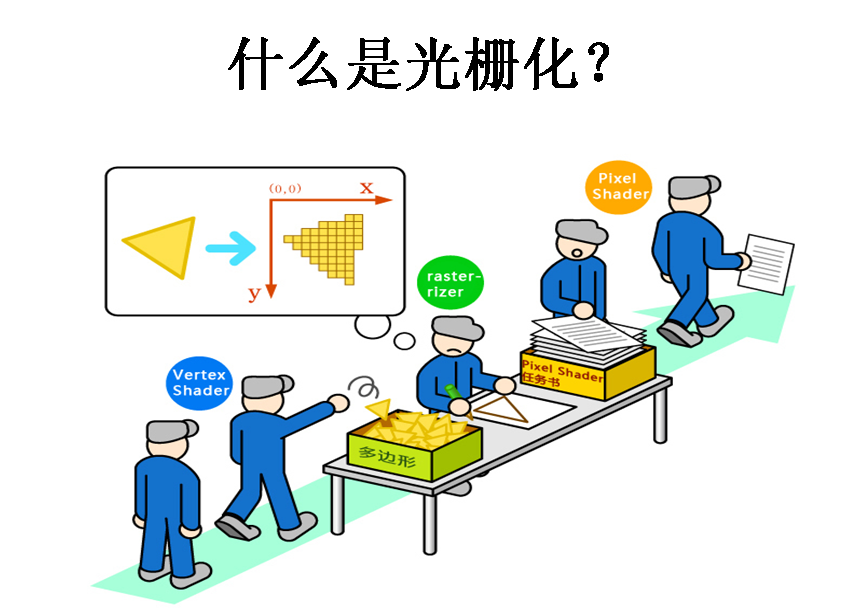
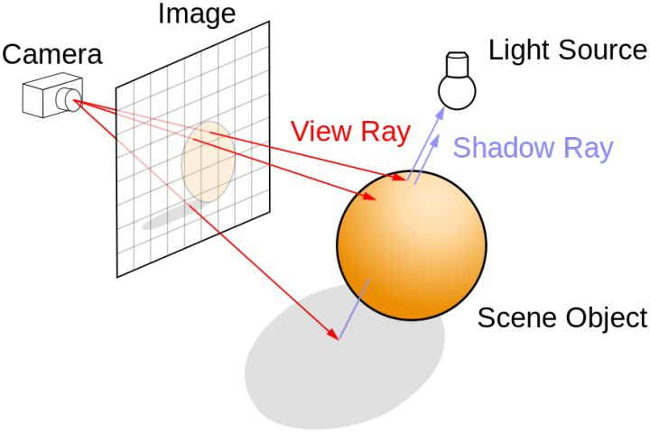
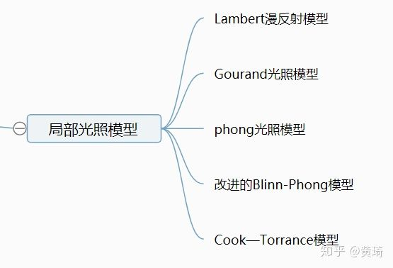
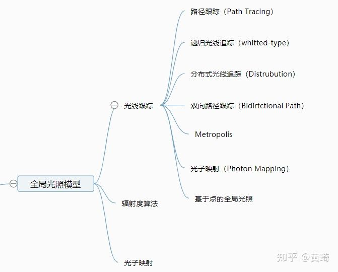

光线追踪（Ray tracing）是三维计算机图形学中的特殊渲染算法，跟踪从眼睛发出的光线而不是光源发出的光线，通过这样一项技术生成编排好的场景的数学模型显现出来。光线追踪的优点可以提供更为真实的光影效果，缺点是计算量巨大。
基本概念
光线追踪与光栅化渲染作为相对的两个概念，理解光栅化渲染更能解释光线追踪的概念。
光栅化渲染是将向量图形格式表示的图像转换成位图以用于显示器或者打印机输出的过程，如图1所示。

光线追踪的示意图如图2所示。[Whitted 1980]提出了使用光线跟踪来在计算机上生成图像的方法，这一方法后来也被称为经典光线跟踪方法或Whitted-style 光线跟踪方法。其主要思想是从视点向成像平面上的像素发射光线，找到与该光线相交的最近物体的交点，如果该点处的表面是散射面，则计算光源直接照射该点产生的颜色；如果该点处表面是镜面或折射面，则继续向反射或折射方向跟踪另一条光线，如此递归下去，直到光线逃逸出场景或达到设定的最大递归深度。这种经典的方法可以产生镜面反射、折射、阴影等效果，不过不能实现其他的全局光照的效果。

辐射度学基本量
图形学模拟可见光与各种材质的交互，这个过程涉及到能量的传输。辐射度学（Radiometry）是度量电磁辐射能量传输的学科，也是基于物理着色模型的基础。
- 能量
能量（Energy），用符号Q表示，单位焦耳（J），每个光子都具有一定量的能量，和频率相关，频率越高，能量也越高。
- 功率
功率（Power），单位瓦特（Watts），或者焦耳／秒（J/s）。辐射度学中，辐射功率也被称为辐射通量（Radiant Flux）或者通量（Flux），指单位时间内通过表面或者空间区域的能量的总量，用符号\Phi 表示，定义 $\Phi = \frac{ dQ}{dt}$。
- 辐照度和辐出度
辐照度（Irradiance），指单位时间内到达单位面积的辐射能量，或到达单位面积的辐射通量，也就是通量对于面积的密度。用符号E表示，单位 $W / m^{2}$ 。定义为 $E = \frac{d\Phi }{dA}$。
辐出度（Radiant Existance），也称为辐射出射度、辐射度（Radiosity），用符号M表示。辐出度与辐照度类似，唯一的区别在辐出度衡量的是离开表面的通量密度，辐照度衡量的是到达表面的通量密度。辐照度和辐出度都可以称为辐射通量密度（Radiant Flux Density）。
- 辐射强度
立体角则是度量三维角度的量，用符号 $\omega$ 表示，单位为立体弧度（也叫球面度，Steradian，简写为sr），等于立体角在单位球上对应的区域的面积（实际上也就是在任意半径的球上的面积除以半径的平方 $\omega = \frac {s}{r^{2} }$ ），单位球的表面积是 $4\pi$ ，所以整个球面的立体角也是$4\pi$ 。
辐射强度（Radiant Intensity），指通过单位立体角的辐射通量。用符号I表示，单位 $W / sr$，定义为 $I = \frac{d \Phi }{d \omega }$ 。之所以引入辐射强度，是因为有时候要度量通过一个点的通量的密度，但因为点的面积是0，无法使用辐照度，所以引入辐射强度。辐射强度不会随距离变化而变化，不像点光源的辐照度会随距离增大而衰减，这是因为立体角不会随距离变化而变化。
- 辐射率
辐射率（Radiance），指每单位面积每单位立体角的辐射通量密度。用符号 $L$ 表示，单位 $W/m^{2} sr$ ，定义为 $L = \frac{d \Phi }{d\omega d A^{\bot } }$ 。其中 $dA^{\bot}$是微分面积dA在垂直于光线方向的投影。
渲染方程（The Rendering Equation）
[Kajiya 1986]第一次将渲染方程引入图形学，使用它来解释光能传输的产生的各种现象。这一方程描述了场景中光能传输达到稳定状态以后，物体表面某个点在某个方向上的辐射亮度（Radiance）与入射辐射亮度等的关系。
$$L_o(x,w_o)=L_e(x,w_0)+\int_\Omega{f_r(x,w_i,w_0)L_i(x,w_i)cos\theta_idw_i}$$
其中，$L_o(x,w_o)$ 表示物体表面点 $x$ 处在方向 $𝜔_𝑜$ 上出射的辐射亮度，$𝐿𝑒(𝑥, 𝜔_0)$ 表示在该点该方向上自辐射的亮度。$𝐿𝑖(𝑥,𝜔_𝑖)$ 表示该点处 $𝜔_𝑖$ 方向入射的辐射亮度，$𝑓𝑟(𝑥, 𝜔_𝑖, 𝜔_𝑜)$ 是双向反射分布函数（BRDF），描述的是入射方向的辐射亮度对出射方向的贡献，$cos 𝜃𝑖$ 是$𝜔_𝑖$与表面法向的点积。在这一方程的基础上，辐射度方法和蒙特卡罗光线跟踪的方法就可以看成是对方程中积分的不同的数值求解方法。
BRDF描述的是表面本身的性质，比如它的光滑程度，导电程度等等。由于四面八方的光线都会作用在这个表面，所以我们需要对所有方向进行积分，也就是一个球面上的积分，考虑到积分项中的 $(w_i\cdot n)$ ，那么只有位于正半空间的方向才会对最终积分有贡献，所以最后这个球面的积分就变成了一个半球的积分，如图3所示。

双向反射分布函数（bidirectional reflectance distribution function, BRDF）
在计算机图形学领域，着色（Shading）是指根据表面或者多边形相对光源和相机的角度和距离来计算它的颜色的过程。不同的用途可以使用不同的着色算法，CAD等追求响应速度的交互式图形领域可以使用简单快速的着色算法，卡通油画等艺术效果可以使用非真实感（Nonphotorealistic）着色算法，而追求真实感的CG电影或游戏则可以使用基于物理建模的着色算法。而BRDF是基于物理建模的着色算法的理论基础。
我们看到一个表面，实际上是周围环境的光照射到表面上，然后表面将一部分光反射到我们眼睛里。双向反射分布函数BRDF（Bidirectional Reflectance Distribution Function）就是描述表面入射光和反射光关系的。
对于一个方向的入射光，表面会将光反射到表面上半球的各个方向，不同方向反射的比例是不同的，我们用BRDF来表示指定方向的反射光和入射光的比例关系，BRDF定义为：
$$f(l,v)=\frac{dL_o(v)}{dE(l)}$$
其中，$f$就是BRDF，$l$是入射光方向，$v$是观察方向，也就是我们关心的反射光方向。$d L_o(v)$ 是表面反射到$v$方向的反射光的微分辐射率。表面反射到$v$方向的反射光的辐射率为$L_o(v)$，来自于表面上半球所有方向的入射光线的贡献，而微分辐射率 $d L_o(v)$ 特指来自方向 $l$ 的入射光贡献的反射辐射率。$dE(l)$是表面上来自入射光方向 $l$ 的微分辐照度。表面接收到的辐照度为 $E$ ，来自上半球所有方向的入射光线的贡献，而微分辐照度 $dE(l)$ 特指来自于方向 $l$ 的入射光。
光照模型（illumination model）
当光照射到物体表面时,物体对光会发生反射、透射、吸收、衍射、折射、和干涉,其中被物体吸收的部分转化为热,反射、透射的光进入人的视觉系统,使我们能看见物体。为模拟这一现象,我们建立一些数学模型来替代复杂的物理模型，这些模型就称为明暗效应模型或者光照明模型。
局部光照模型
在真实感图形学中,仅处理光源直接照射物体表面的光照明模型被称为局部光照明模型。局部光照明模型的分类如图4所示。

局部光照模型是一种比较简单的光照模型，它是与光栅化渲染算法相适应的，光栅化算法一次只考虑一个像素的光照强度，因此局部光照模型不能计算某像素受其他像素影响的光照强度部分。也就是说，局部光照模型只对物体进行直接光照的计算，而不考虑其他的间接影响。
全局光照模型
全局光照模型是基于光学物理原理的，光照强度的计算依赖于光能在现实世界中的传播情况，考虑光线与整个场景中各物体表面及物体表面间的相互影响，包括多次反射 、透射 、散射等。因此，与局部光照模型相比，全局光照模型需要相当大的计算量 ，但同时也能取得非常逼真的真实效果 。全局光照模型分类如图5所示。

求交检测
在光线追踪过程中，从眼睛发出的光线与3D模型的三角面求交是一个复杂问题。通常精致的3D模型可能由几十万至上百万三角面构成，如果采用穷举法求交点，其时间复杂度将是O(n), 过于复杂。为了减少不必要的求交检测，应采用空间划分技术，最常用的是平衡kdtree算法，提高求交检测的效率。
k-d tree
在计算机科学里，k-d树（ k-维树的缩写）是在k维欧几里德空间组织点的数据结构。k-d树可以使用在多种应用场合，如多维键值搜索（例：范围搜寻及最邻近搜索）。k-d树是空间二分树（Binary space partitioning ）的一种特殊情况。
k-d树是每个节点都为k维点的二叉树。所有非叶子节点可以视作用一个超平面把空间分割成两个半空间。节点左边的子树代表在超平面左边的点，节点右边的子树代表在超平面右边的点。选择超平面的方法如下：每个节点都与k维中垂直于超平面的那一维有关。因此，如果选择按照x轴划分，所有x值小于指定值的节点都会出现在左子树，所有x值大于指定值的节点都会出现在右子树。这样，超平面可以用该x值来确定，其法线为x轴的单位向量。
参考链接
- 光线追踪,by wikipedia.
- 栅格化,by wikipedia.
- 渲染,by wikipedia.
- 光线追踪基本概念与代码实现,by 鹅城惊喜师爷.
- 一篇光线追踪的入门,by 洛城.
- 基于蒙特卡罗的光线跟踪绘制方法,by 严俊.
- 基于物理着色：BRDF,by Maple.
- Monte-Carlo Ray Tracing System (一)原理以及设计,by 已退逼乎.
- 冯氏光照模型–镜面光的计算,by MooAiFighting.
- 什么是光照模型,by 黄琦.
- 蒙特卡洛光线追踪,by sunacmer.
- k-d树,by wikipedia.
- 辐射强度、辐亮度、辐照度——一文搞定,by 三眼二郎.